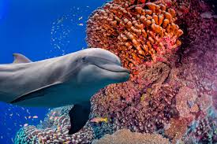

A dolphin is an aquatic mammal within the infraorder Cetacea. Dolphin species belong to the families Delphinidae
(the oceanic dolphins), Platanistidae (the Indian river dolphins), Iniidae (the New World river dolphins),
Pontoporiidae (the brackish dolphins), and the extinct Lipotidae (baiji or Chinese river dolphin). There are 40
extant species named as dolphins.
Dolphins range in size from the 1.7-metre-long (5 ft 7 in) and 50-kilogram (110-pound) Maui's dolphin to the 9.5
m (31 ft 2 in) and 10-tonne (11-short-ton) orca. Various species of dolphins exhibit sexual dimorphism where the
males are larger than females. They have streamlined bodies and two limbs that are modified into flippers.
Though not quite as flexible as seals, some dolphins can briefly travel at speeds of 29 kilometres (18 mi) per
hour or leap about 30 feet (9.1 m).[1] Dolphins use their conical teeth to capture fast-moving prey. They have
well-developed hearing which is adapted for both air and water. It is so well developed that some can survive
even if they are blind. Some species are well adapted for diving to great depths. They have a layer of fat, or
blubber, under the skin to keep warm in the cold water.
Dolphins are widespread. Most species prefer the warm waters of the tropic zones, but some, like the right whale
dolphin, prefer colder climates. Dolphins feed largely on fish and squid, but a few, like the orca, feed on
large mammals such as seals. Male dolphins typically mate with multiple females every year, but females only
mate every two to three years. Calves are typically born in the spring and summer months and females bear all
the responsibility for raising them. Mothers of some species fast and nurse their young for a relatively long
period of time. Dolphins produce a variety of vocalizations, usually in the form of clicks and whistles.
Dolphins are sometimes hunted in places such as Japan, in an activity known as dolphin drive hunting. Besides
drive hunting, they also face threats from bycatch, habitat loss, and marine pollution. Dolphins have been
depicted in various cultures worldwide. Dolphins occasionally feature in literature and film, as in the film
series Free Willy. Dolphins are sometimes kept in captivity and trained to perform tricks. The most common
dolphin species in captivity is the bottlenose dolphin, while there are around 60 orcas in captivity.